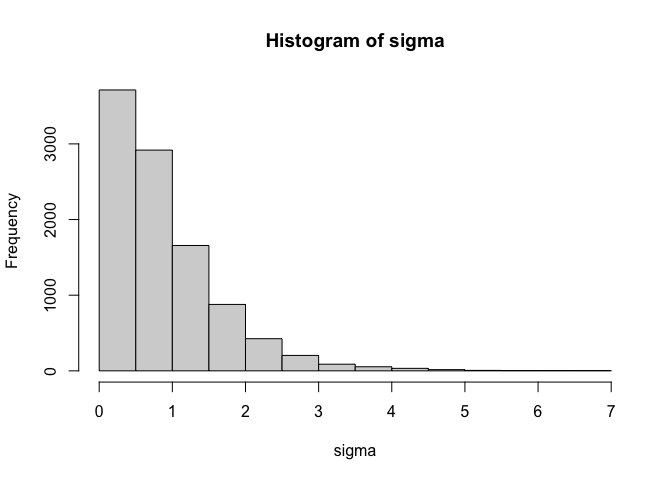

What is a Hierarchical Bayesian Model?
Hierarchical Bayesian models assess individual variation (e.g., between people) in a parameter or quantity of interest while simultaneously producing insights about group or population level effects. This type of model is useful because it avoids the need to a) assume the parameter or quantity of interest is identical across the population or b) assume individuals within the same population are completely independent. The hierarchical model recognises that individuals within a population are likely to share certain common characteristics with other members of that population, but also recognises the presence of individual variation within that population.
Suppose we want to examine the impact of weekly working hours on mental health in a particular population, and that we have multilevel data where multiple observations of both weekly working hours and mental health were taken over time for a set of individuals. A hierarchical Bayesian model would allow us to estimate the impact of working hours on mental health for each individual. However, each individual's estimated effect would be informed not only by that individual's data, but also in part by the estimated effects from other individual's in the population. This phenomenon is sometimes referred to as 'partial pooling' of information. It means that information about the parameter or quantity of interest (in this case, the effect of working hours on mental health) is shared or 'pooled' across individuals in the sample. The 'partial' bit means that an individual's estimate is not completely determined by the information about other individuals' estimates. The model leaves room for individual variation by estimating unique effects for each individual.
The usefulness of hierarchical Bayesian models is well documented elsewhere (e.g., see here, here, or for work from my own lab see here). The point of this post is not to further highlight the virtues of these models. The point is to explain one particularly tricky aspect of actually implementing them.
What is a Non-Centered Parameterisation?
To explain what a non-centered parameterisation is and why it's useful, let's start with a simple example. Let's simulate some multilevel data. In this example, we'll assume we have 500 participants who each produce 5 observations of three variables: X1, X2, and Y. In the code below, the parameters beta0, beta1, beta2, and sigma represent the intercept, linear effect of X1, linear effect of X2, and the residual error respectively. We first assign population-level distributions representing the variation in these parameters across participants. We then randomly sample the parameter values for each participant based on the population-level distributions we defined. Finally, we use the participant-level parameters and the covariates X1 and X2 to randomly generate response variable Y, before creating a list containing that data that can be read into stan.
# Set random seed for reproducibility
set.seed(123)
# Simulate data
N <- 2500 # Total number of observations
J <- 500 # Number of participants
n_j <- N / J # Number of observations per participant
# Generate participant IDs and predictor variables
participant_id <- rep(1:J, each = n_j)
X1 <- rnorm(N, mean = 0, sd = 1)
X2 <- rnorm(N, mean = 0, sd = 1)
# Population parameter values
beta0_mean <- 2.5 # beta0 population mean
beta1_mean <- 1.5 # Effect of X1 population mean
beta2_mean <- -0.2 # Effect of X2 population mean
beta0_sd <- 1.5 # beta0 population SD
beta1_sd <- 1.3 # Effect of X1 population SD
beta2_sd <- 0.7 # Effect of X2 population SD
sigma_mean <- 0.7 # Residual mean
sigma_sd <- 0.3 # Residual SD
# Simulate variability in parameters across participants
beta0 <- rnorm(n = J, mean = beta0_mean, sd = beta0_sd)
beta1 <- rnorm(n = J, mean = beta1_mean, sd = beta1_sd)
beta2 <- rnorm(n = J, mean = beta2_mean, sd = beta2_sd)
sigma <- truncnorm::rtruncnorm(n = J, a = 0, b = Inf, mean = sigma_mean, sd = sigma_sd)
# Generate response variable
Y <- rep(beta0, each = n_j) +
rep(beta1, each = n_j) * X1 +
rep(beta2, each = n_j) * X2 +
rnorm(N, mean = 0, sd = rep(sigma, each = n_j))
# Prepare data for Stan
stan_data <- list(
N = N, J = J, X1 = X1, X2 = X2, Y = Y, participant_id = participant_id
)Now let's define a hierarchical Bayesian model of this data in stan. What makes the model below hierarchical is that the priors on the participant-level parameters defined in the model section depend on the population-level parameters, which themselves are uncertain and therefore estimated by the model. Information from each participant's data flows "up the hierarchy" influencing the population-level parameters via the individual-specific parameters. But information about the population parameters in turn flows back down the hierarchy by constraining the individual parameters to values that are more plausible given the distribution of those parameters in the population.
data {
int<lower=0> N; // Number of observations
int<lower=0> J; // Number of participants
vector[N] X1; // Predictor 1
vector[N] X2; // Predictor 2
vector[N] Y; // Response variable
array[N] int participant_id; // Participant IDs
}
parameters {
real beta0_mean; // Intercept population mean
real beta1_mean; // Effect of X1 population mean
real beta2_mean; // Effect of X2 population mean
real<lower=0> beta0_sd; // Intercept population SD
real<lower=0> beta1_sd; // Effect of X1 population SD
real<lower=0> beta2_sd; // Effect of X2 population SD
real<lower=0> sigma_mean; // Residual mean
real<lower=0> sigma_sd; // Residual SD
vector[J] beta0; // Participant intercepts
vector[J] beta1; // Participant X1 effects
vector[J] beta2; // Participant X2 effects
vector<lower=0>[J] sigma; // Participant residuals
}
model {
// Population-level Priors
beta0_mean ~ normal(0, 5);
beta1_mean ~ normal(0, 5);
beta2_mean ~ normal(0, 5);
beta0_sd ~ normal(0, 2.5);
beta1_sd ~ normal(0, 2.5);
beta2_sd ~ normal(0, 2.5);
sigma_mean ~ normal(0, 2.5);
sigma_sd ~ normal(0, 2.5);
// Participant-level Priors
beta0 ~ normal(beta0_mean, beta0_sd);
beta1 ~ normal(beta1_mean, beta1_sd);
beta2 ~ normal(beta2_mean, beta2_sd);
sigma ~ normal(sigma_mean, sigma_sd);
// Likelihood
Y ~ normal(beta0[participant_id] + beta1[participant_id] .* X1
+ beta2[participant_id] .* X2, sigma[participant_id]);
}As you can see from the message after the model finished, there were a lot of divergent transitions (694 of 4000, or 17%). This means the sampler is having difficulty exploring the posterior distribution effectively. This is common when hierarchical models are specified this way, because the scale of each participant-level parameter depends on another parameter in the model. This dependency can create a posterior geometry that is tricky to sample from efficiently.
This is where the non-centered parameterisation can be helpful. It removes this dependency by reparameterising the participant-level parameters. In the model below, a non-centered parameterisation is applied to beta0, beta1, and beta2 (sigma is a little more complicated since it's bounded at 0. We'll get to that next). As you can see, we now estimate z-scores for these three parameters and then in the transformed parameters block unstandardise the parameter via an inverse-z transform.
However, after applying this non-centered parameterisation to the beta parameters only, we're still getting a lot of divergences and hitting the maximum treedepth on many iterations, which suggests that the model still isn't sampling efficiently. This is because we still haven't applied a non-centered parameterisation to sigma.
Non-Centered Parameterisation for Truncated Parameters
What makes beta0, beta1, and beta2 easy to reparameterise is the fact that these variables can take on any real value. In other words, they're not bounded or constrained to a particular range. So we don't have to worry about the result of the inverse-z transform satisfying a particular constraint. But not all parameters are unbounded. A good example of a bounded parameter is a standard deviation. Standard deviations must be positive. So when estimating these parameters, a common approach is to sample from truncated distributions that are constrained to have a lower bound of 0 (as we have in the models above). It's not immediately obvious how the non-centered parameterisation can be applied to parameters that are bounded.
As it turns out, it's actually fairly straightforward. The trick is to sample the parameter as if it were unconstrained and then convert it via transformation to impose the appropriate constraints. Let's assume we want to apply a non-centered transformation to sigma that accounts for the constraint that this parameter should be positive. We can use the exp() function to exponentiate the result of the inverse-z transform, which maps sigma to the positive real numbers. Technically, this transformation means that sigma is lognormally distributed.
However, the resulting distribution of sigma is heavily skewed. This happens because of the exponential transformation. Values that are on the high end of the distribution before the exponentiation get pulled way out when the transformation is applied. A prior that is this heavily skewed can be difficult to sample from.
Importantly, there are other transformations that we can apply. One that I particularly like is the softplus transformation $f(x) = \log(1+e^x)$. This transformation avoids the heavy skew that can sometimes be created by simply exponentiating.

This second distribution is much less skewed and will be easier to sample from. As with the non-centered parameterisation applied to unconstrained parameters, you can change the priors on the distribution by modifying the priors on the population parameters. If you want to truncate the distribution at a value other than zero, all you need to do is add a constant. To make the truncation point an upper bound instead of a lower bound, simply multiply the result of the transformation by -1.
Here's a model that uses the softplus transformation to apply a non-centered parameterisation to the sigma parameter. The process is identical to how we reparameterise the beta parameters except that the softplus transformation is applied to the parameter after the inverse-z transform.
parameters {
real beta0_mean;
real beta1_mean;
real beta2_mean;
real<lower=0> beta0_sd;
real<lower=0> beta1_sd;
real<lower=0> beta2_sd;
real sigma_mean; // before transformation
real<lower=0> sigma_sd; // before transformation
vector[J] beta0_z;
vector[J] beta1_z;
vector[J] beta2_z;
vector[J] sigma_z; // before transformation
}
transformed parameters {
vector[J] beta0 = beta0_mean + beta0_sd * beta0_z;
vector[J] beta1 = beta1_mean + beta1_sd * beta1_z;
vector[J] beta2 = beta2_mean + beta2_sd * beta2_z;
vector[J] sigma = log1p_exp(sigma_mean + sigma_sd * sigma_z);
}You can see from the output that there is only a small number of divergent transitions (6 of 4000, or 0.0%), which are rare enough that they shouldn't pose any challenges for interpreting the results. There are also no more instances of the maximum treedepth being reached. The summary statistics and traceplot of the population parameters show the model has converged.

It's also possible to apply non-centered transformations to double bounded parameters that have lower bounds and upper bounds (e.g., probability parameters that are constrained between 0 and 1). But there's a bit more to think about with double bounded parameters, so I think I'll address those in a future post. What I really want to get to in this post is how to apply non-centered transformations to multivariate distributions.
Non-Centered Parameterisation for Multivariate Distributions
The models presented above assume that individual variation in the parameters are uncorrelated. In other words, knowing one person's value of beta0 gives us no information about their plausible beta1 and beta2 values. However, in many cases, it's reasonable to assume these quantities are correlated. Returning to the example question of how the number of hours we spend working affects our mental health, it's plausible that those with lower levels of mental health overall suffer more from working longer hours. To examine this possibility, we need to allow for the individual-specific parameters to be correlated.
There are a number of ways to parameterise a model with correlated individual-level parameters. One approach is to directly estimate the population covariance matrix using an inverse-Wishart prior. A second approach decouples the standard deviations from the correlations, separately estimating the population correlation matrix (with an LKJ prior) and a vector of population standard deviations. This avoids the problem of the scale of the population distributions influencing the degree of covariation between the parameters.
The non-centered version extends on the second approach. Instead of estimating the correlation matrix directly, we estimate the Cholesky factor of the correlation matrix, which makes things computationally simpler. Once we compute the Cholesky factor of the covariance matrix, we apply the multivariate version of the inverse-z transform to compute the values of beta0, beta1, and beta2.
parameters {
vector[3] population_means;
vector<lower=0>[3] population_sds;
cholesky_factor_corr[3] L_population_corr;
matrix[J,3] theta_z;
real sigma_mean;
real<lower=0> sigma_sd;
vector[J] sigma_z;
}
transformed parameters {
vector[J] sigma = log1p_exp(sigma_mean + sigma_sd * sigma_z);
matrix[3,3] L_population_cov = diag_pre_multiply(population_sds, L_population_corr);
matrix[J,3] theta = rep_matrix(population_means', J) + theta_z * L_population_cov';
vector[J] beta0 = theta[,1];
vector[J] beta1 = theta[,2];
vector[J] beta2 = theta[,3];
}
model {
population_means ~ normal(0, 5);
population_sds ~ normal(0, 2.5);
L_population_corr ~ lkj_corr_cholesky(1);
sigma_mean ~ normal(0, 2.5);
sigma_sd ~ normal(0, 2.5);
to_vector(theta_z) ~ std_normal();
sigma_z ~ std_normal();
Y ~ normal(beta0[participant_id] + beta1[participant_id] .* X1
+ beta2[participant_id] .* X2, sigma[participant_id]);
}
generated quantities {
corr_matrix[3] population_corr = multiply_lower_tri_self_transpose(L_population_corr);
}All three parameterisations (direct covariance estimation, separated correlation/SD estimation, and non-centered Cholesky) produce roughly the same parameter estimates. None of these models had any issues with sampling efficiency when applied to these data, but notice that the non-centered version finished much more quickly. In other datasets or for higher-dimensional models, these three parameterisations might differ quite substantially in how efficiently they're able to explore the posterior. So if one parameterisation isn't quite working, try one of the others!